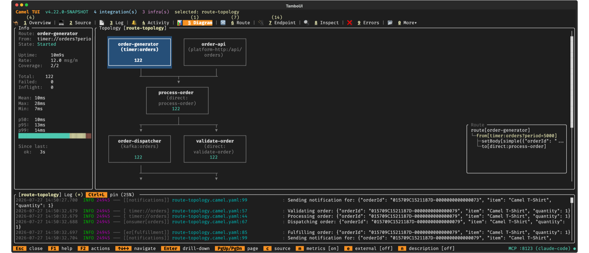
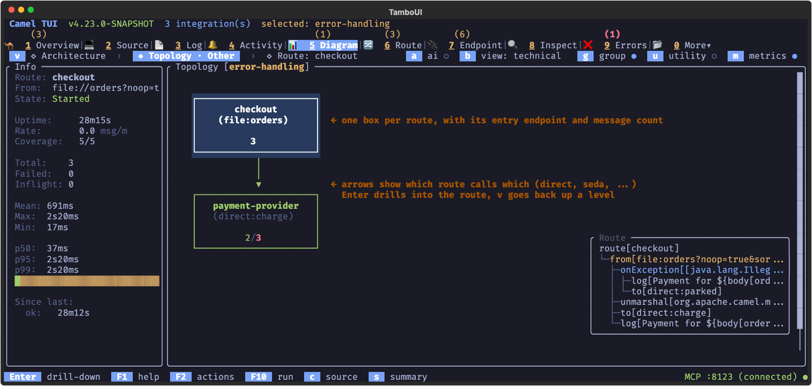
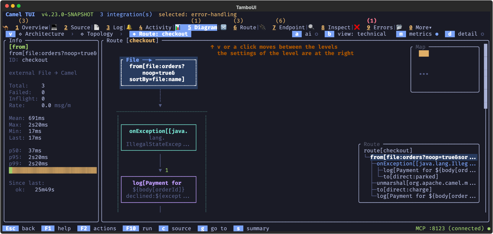
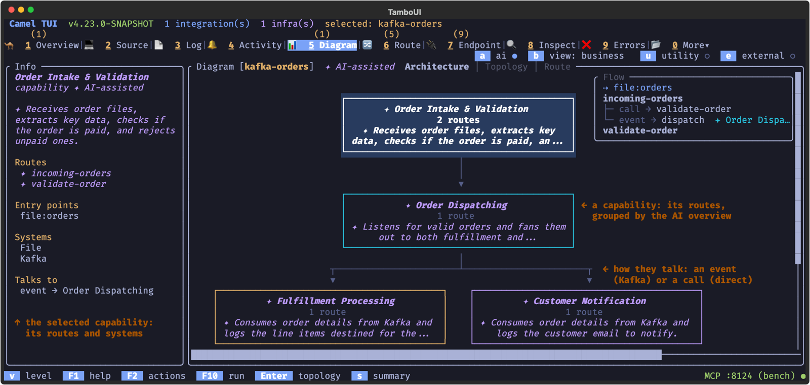

Camel TUI Diagram
The Diagram tab (5) draws your integration: the routes as boxes connected by the endpoints they share, with live message counts, from a business-level architecture view down to the processors of one route. It is the fastest way to understand an integration you did not write, and to see where the messages go and where they fail.
See Camel TUI for getting started and the other pages.
Key Features
-
Three levels — Architecture › Topology › Route, moved through with v or a click
-
Architecture view — the capabilities of the integration and how they connect
-
Topology view — every route and the endpoints that connect them, with live counts
-
Drill-down — the processors of one route, step by step
-
Error handling (x) — the happy path by default; on, the error handling in a frame of its own, in the topology and in a route
-
External endpoints — what the integration consumes from and sends to outside
-
Metrics and source — throughput and timing on the boxes, and the source a box comes from
Route Topology Diagram
The Diagram tab renders the route topology as interactive ASCII art. It shows how routes connect to each other through shared endpoints (direct, seda, kafka, etc.).

Topology View
The topology shows all routes as boxes, connected by arrows:
-
Trigger routes (timer, cron, etc.) appear at the top
-
Downstream routes appear below, connected by directed arrows
-
Route boxes show the route ID, the
fromendpoint, and metrics when enabled
Navigate between route boxes with arrow keys. When a route is selected, an Info panel appears on the left showing state, uptime, throughput, exchange counts, and processing times.

Drill-Down into Routes
Press Enter on a selected route to drill down into its internal EIP structure. Each processor and EIP node is displayed with its type (colored by category), endpoint URI, and per-node statistics.
Nodes that connect to other routes show a Enter indicator — press Enter to jump directly to the linked route. Navigation history is maintained as a breadcrumb stack: press Esc to go back to the previous route, and eventually back to the topology view.
The route shows its own steps. Its onException clauses (a global one is copied into every route) are not drawn among them: press x to show the route’s error handling in a frame below it (see Diagram levels).
Press t to jump straight back to the topology from any depth.

Diagram levels
The Diagram tab shows one diagram at three zoom levels, and the line above it says which one you see:
v ◇ Architecture › ◆ Topology › ◇ Route: order-intake b view: business g group ● m metrics ● e external ○
-
Architecture — the routes grouped by what they do for the business (see below);
-
Topology — all the routes and how they connect; coming down from a capability, its routes are highlighted, as the label says (
Topology · Order intake); -
Route — the steps of one route.
The level shown is highlighted; the others stay visible, and one that does not apply yet (Route, until a route is selected) is greyed out. Enter zooms in and Esc zooms out, from a route to its topology and from the topology to the architecture (at the architecture, Esc goes back to the Overview tab as on any tab). v, shown at the start of the line, moves to the next level and round again, and a click on a level goes there.
The right side of the line holds the view settings of the level shown, with their state (● on, ○ off, or the mode). a ai, shown unless the AI Overview setting is off, switches every level between the view with the AI-assisted parts and the facts alone: off, the architecture groups only by what the sources say (route groups, shared services, utility, and Other for the rest), and the topology, the Info panel and the Routes tab show no AI label, note or group. It changes what is shown only: the AI overview setting, the summary and its automatic updates stay as they are. When the project has no camel-summary.md yet, a has the AI write one, as /overview does: the AI panel opens to show it start, and the diagram picks up the summary once it is saved. b switches every level between the business view and the technical view: route labels and what capabilities achieve (the AI-assisted parts marked ✦), or route ids with their endpoints and the entry points and systems of each capability. The business view is the default when the routes have descriptions, from their source or the AI project overview; n, the key of the former description toggle, does the same. m metrics and e external systems apply to the topology, m and d detail to a route. g group, in the topology, shows the architecture one level down: each route box names its group (a route group, an AI capability marked ✦, shared services or utility), each group has the border colour of its box in the architecture, and a legend at the bottom of the topology lists the groups in their colours; it is on when the project has groups. u shows or hides the utility routes, one setting for the architecture and the topology, so both show the same groups. x errors, in the topology, draws the error handling in a frame of its own below the routes: the routes reached only while handling a failure (such as the target of a dead letter channel), and under each one where its failures come from and how they are handled (handled: the message ends there; continued; not handled: the failure goes on to the caller). There are no arrows into the frame (with a global error handler every route would have one); selecting a route in the frame highlights the routes that send to it. Off, the topology shows the happy path only. A route with error handling has a dim ⚡ on its box, in the topology and in the route view, whether the error handling is shown or not. In the route view x does the same for one route: off, the route shows its own steps only, without the onException clauses (a global one is in every route); on, a frame below the route lists where its failures go and where it is reached on error from, and shows its onException clauses as blocks of their own. The history view always shows the onException clauses, so a replay can step into them. It needs Camel 4.23 or newer in the integration; the toggle says 4.23+ for an older one. The route boxes widen, within reason, so a label and its group fit on a line, and the Info panel of a route names its group (✦ when the AI placed it). The footer lists only actions, such as Enter drill-down, c source and s summary.
Architecture View
A topology of many routes turns into spaghetti. The Architecture level shows the routes grouped by what they do for the business, one box per group, so a project of eighty routes reads as a handful of boxes. The view reads the source files of the selected integration, not the running routes.

Each route has one role:
-
route group — the routes that set
groupin the source. The source always wins, and these groups are drawn as facts, without a mark. -
capability — the business capabilities the AI project overview proposed (
/overviewin the AI panel). An AI decided them, so they are drawn in theai-assistedstyle, italic with a✦. -
Shared services — routes that routes of two or more groups call or hand off to, such as an audit or notification route. Derived from the links between routes, and shown once instead of in every group that uses them.
-
Utility — plumbing with little business meaning: a route reached only while handling a failure (from a
doCatch, anonExceptionor a dead letter channel), a route that only logs, or one the AI marked as utility. Hidden until you press u; with x on, the routes reached only on error are shown in the error handling frame of the topology instead. -
Other — routes nothing above placed yet;
/overviewgroups them.
A box shows how many routes the group has, its entry points (HTTP, schedules, consumers) and the external systems its routes use; a warning count when the project overview found problems in its routes, such as a direct endpoint no route consumes. Arrows between boxes are the links between their routes, with the strongest kind (a call over a hand-off over an event). The Info panel on the left lists the routes, entry points, systems, and what the AI wrote about a capability.
A small Flow panel at the bottom right shows the inside of the selected group, what Enter goes down to: each of its routes in the order messages flow, with where messages enter it and what it hands off to. That is the routes it links to (call, async, event, on error; a route of another group is named with its group, in that group’s colour) and the remote systems it sends to, such as a queue or an HTTP service. Sends that stay inside the integration, such as a log, are left out, as the catalog says the component is not remote. It is not shown for an external system, whose Info panel lists its routes.
Press e to draw the external systems as boxes of their own, dashed as in the topology: the systems messages come in from above the groups, the ones they go out to below, each linked to the groups that use it. A system only utility routes use goes away with them. Select a system to see in the Info panel which groups and routes use it and each of its endpoints with its route; Enter goes down to the topology with those routes highlighted. Press e again for the boxes alone.
Press Enter on a box to go down to the topology of all routes, with that group’s routes highlighted and the first of them selected, so you see the group in the whole picture of how the routes connect. Esc from there comes back to the architecture, on the group you came from. The view follows the project by itself: edited routes and a summary /overview has just written show up within a few seconds.
camel overview prints the same grouping as the Architecture section of camel-summary.md (see Project overview).
Keyboard Shortcuts
Diagram Tab
| Key | Action |
|---|---|
Arrow keys | Navigate between route boxes (topology) or EIP nodes (drill-down) |
Enter | Drill down into selected route / jump to linked route |
Esc | Go back (previous route or topology) |
t | Jump to topology view |
m | Toggle metrics overlay |
e | External systems: in the topology off, edges, all; in the architecture off or edges |
a | AI-assisted parts shown, or the facts alone; without a |
b (or n) | Business view (labels, what capabilities achieve) or technical view (route ids, endpoints) |
c | View route source code |
v | Next level: Architecture, Topology, Route |
u | In the architecture and the topology: show or hide the utility routes |
g | In the topology: show each route’s group (route group, AI capability, shared services, utility) |
x | In the topology and a route: show or hide the error handling, in a frame of its own (needs Camel 4.23+ in the integration) |
s | Open the integration summary ( |